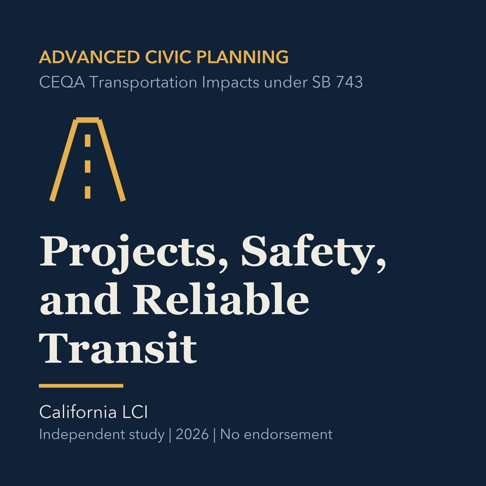

EPISODE 25
Projects, Safety, and Reliable Transit
Evaluates transportation projects through safety, reliability, access, and development process.

- Stable GUID
ba5b81bb-a601-59d7-b835-0279eef0bc84- Release
- advanced-civic-planning-v2026.3
- SHA-256
0a87ac4b28ea802b9551fd76f95657bf0afe4e485139136f4f2ae65a15f37cb7